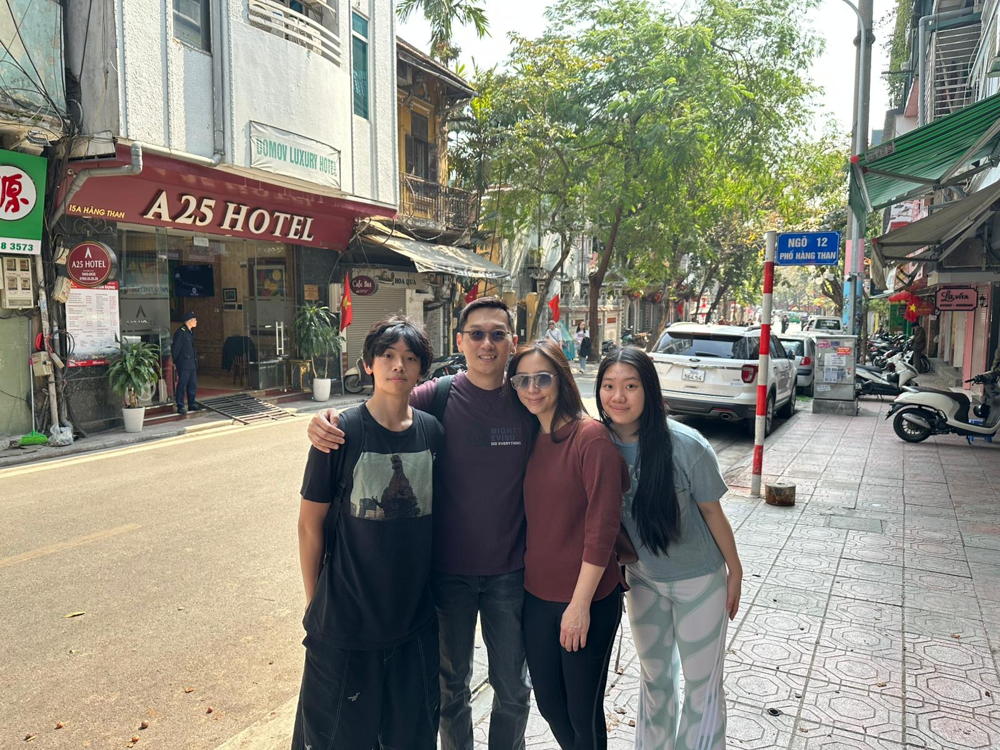
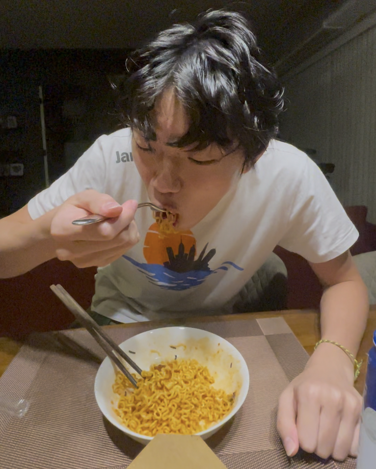

 Hi, I’m Owen Chan, a 16-year-old student at ISF Academy with a deep passion for learning and exploring the world around me. As a curious and driven individual, I’ve developed a strong interest in computer science, a field that fascinates me with its endless possibilities and potential to solve real-world problems. Whether it’s coding, designing algorithms, or understanding how technology shapes our lives, I’m always eager to dive deeper into the world of programming and innovation. I enjoy working on projects that challenge me to think critically and creatively, and I’m particularly interested in areas like artificial intelligence, software development, and data analysis. Beyond academics, I’m also a huge fan of instant noodles—they’re my ultimate comfort food and a fun way to explore different cultures and flavors. Combining my love for technology and food, I’m always looking for ways to connect my interests, whether it’s through coding projects or simply enjoying a bowl of noodles while brainstorming my next big idea. For my Unit 04, Webdesign Project, I decided to make a website based on all the different types of instant noodles that I like, teach people how to make them, give my own ratings, and also provide tips and tricks to revamp the instant noodles in a unique way.
I decided to make my webdesign unit's website about Instant noodles, because I am absolutely passionate about instant noodles. For me, they’re more than just a quick meal—they’re a gateway to exploring flavors, cultures, and creativity. From the fiery spice of Korean Buldak Ramen to the comforting richness of Japanese tonkotsu-style noodles, I love how each bowl tells a story. I’m always on the hunt for new flavors and brands to try, and I enjoy experimenting with toppings and recipes to make each bowl uniquely mine. Instant noodles are my go-to comfort food, whether I’m craving a late-night snack or a hearty meal. They’re convenient, versatile, and endlessly satisfying, and my love for them connects me to a global community of fellow noodle enthusiasts. For me, instant noodles are more than just food—they’re a source of joy, nostalgia, and endless discovery. Although I realize that it is unhealthy, the taste and the instantness of the noodles bring me back everytime. At late nights and working school hours, when craving food, I simply cook up a nice bowl of instant noodles, providing me energy to finish off the night.
Shin Ramyun Hacks:
The Carbonara Style: To jazz up your Shin Ramyun Noodles, one way is to add mayo, garlic, and an eggyolk into the bowl, add some hot water and mix it up, and then insert the noodles along with the soup. This allows for a very tasty, creamy, brothy, garlicky bowl of noodles, perfect when craving a hot warm bowl of shin ramyun.
The Hot Oil Style: Another method of enhancing the taste of Shin Ramyun Noodles is turning it froma soup based noodle to a pan fried type of noodle. First, Add oil to a pot, along with chilli flakes, the seasoning packet, garlic, and green onions. Wait for the oil to heat up, and when it is smoking, pour the hot oil into the mixture, along with the cooked shin ramyun, creating a aromatic bowl of shin ramyun noodles.
The Egg Style: One simpler way of enhancing noodles is to add an egg while the noodle is half cooked. Along with the egg, add some cheese, and when the noodles are done, the egg and cheese should add a creamy and extra protein towards the bowl of noodles, making it not only less spicy, and more flavourful.
Buldak Ramen Hacks:
The Hot Oil Style: Similar to the Shin Ramyun Hack, This incorporates the same hot oil technique, where you pour hot oil over the buldaks spicy sauce, any other sauce packs, chilli oil, garlic, and mayonaise, adding to the taste and texture of the already flavourful noodles.
The popular potato cheese corn mixture: One very popular korean method of enhancing buldak is by first, cook the Buldak as you would normally, but excluding the seaweed packet. Then, Make the topping by mixing all the ingredients below in a bowl: 170g canned sweet corn 40g shredded mozzarella cheese 1/4 Tbsp sugar 1 ½ Tbsp mayonaise. After that, Place Buldak on a plate and top with the sweet corn mixture. Lastly, Microwave for a minute and a half, and it is ready to be served.
The Milk Base: This method is where instead of cooking the noodles in water, you cook it in a base of milk, adding towards the creaminess and richness of the noodles, and flavor.